Ucho design system
Blush on warm neutrals. Calm for long calls, unmistakable when recording.
Blush
Stone
Components
Buttons
Status
ReadyTranscribing 42%Recording
Ctrl + Alt + R
00:12:31
Transcript
[00:00:05]Me: Zaczynamy od budżetu na czwarty kwartał.
[00:02:10]Meeting: Dostawca podniósł cenę o dziesięć procent.
[00:02:31]Me: Then we need a second quote by Friday.